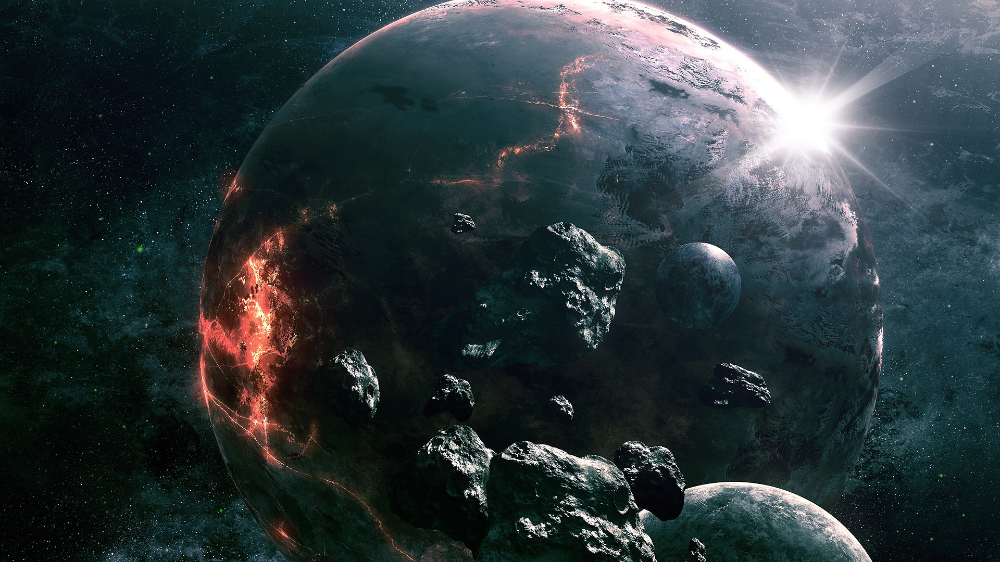

星火 |
天文网 |
web 天文博物馆 |
 |
创建于1996年 |
|  宇宙是万物的总称，是时间和空间的统一。宇宙是物质世界，不依赖于人的意志而客观存在，并处于不断运动和发展中，在时间上没有开始没有结束，在空间上没有边界没有尽头。宇宙是多样又统一的；多样在物质表现状态的多样性；统一在于其物质性。宇宙是由空间、时间、物质和能量，所构成的统一体。 宇宙另一种解释：它只是人类视觉和触觉下的产物，更根本的是种思维世界，它不是物质世界，只依赖人的意志而客观存在，它没有时间和空间，没有任何真理能证明它的存在。 2018年1月12日美媒称，宇宙已经138亿岁了。 |